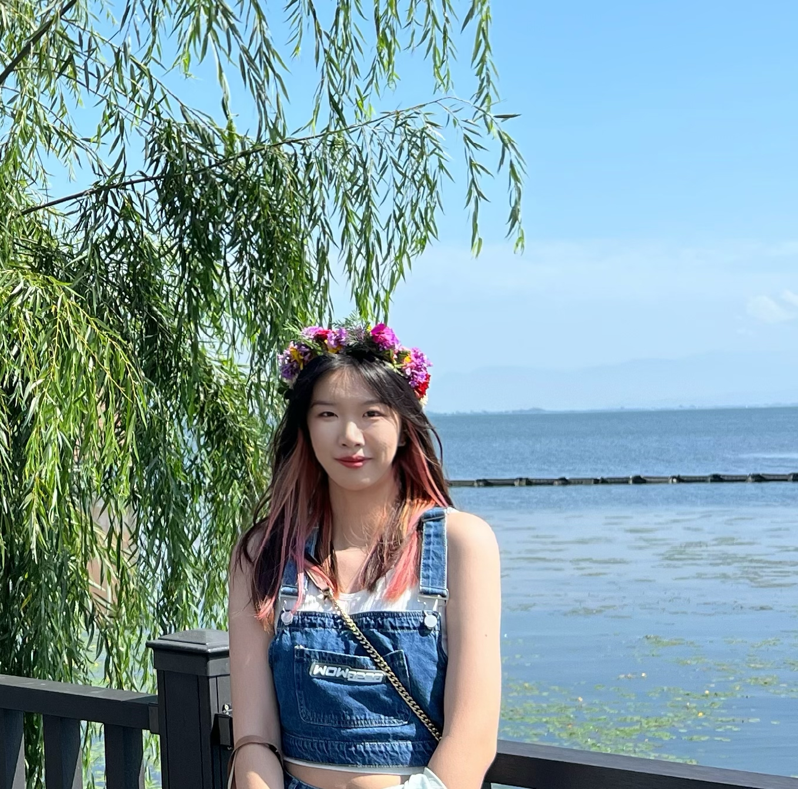

|  |
About meHi I am Shiyu and I am a new student in the DSAN program. I am in a business and management background. As the same time, I have learned Python& R programming to complete some statistical/machine learning project. I am really interested in data visualization of machine learning. I want to learn some career-related skills from this program and step onto a higher platform. After graduation, I really want to be a data analyst in a high-tech company such as Google, etc. I find it very rewarding to fulfill the data analysis needs of customers in a large company, and I am passionate about it. I really like music and I like to wear headphones all the time. I also enjoy hanging out with friends. All of my virtues have been incorporated in me by my school and helping is one of them. My school always aims at the holistic development of a student and it focuses on the fact that we develop both morally as well as academically. It is always a part of learning that you try to inculcate virtues in yourself by being an honest person. To be responsible and to adhere to your duties, is what our school teachers us. I am a very consistent and punctual person. Being a dedicated student, I always stand first in my class because of which I have bagged many awards. I always try to improve my skills and morals to become a better student. I do this by helping my classmates with love and dedication. I love to study storybooks as a pastime. I am also learning cycling so that I can keep myself healthy. I believe, one should practice a lot of sports to keep oneself healthy. A healthy mind works better. So, it is very important to keep yourself healthy to get focused. I am also very fond of watching various movies and I love to dance. I have learned many forms of dance ranging from hip-hop to breakdance. Being a lover of various dances, I also love to participate in various curricular activities in my school. I am an active participant in a bunch of fests organized by my school. Also, I have been a part of several quizzes debates, and tabloids. I have a huge interest in quizzes and have bagged many awards and honors to my school. Moreover, I always try to keep myself very punctual to school and help poor people whenever I get a chance. I love to research the undiscovered things in this world which is why I aspire to become a data scientist. I am always thankful to my family and my friends for making me so humble and helping me every day trying to show me the goal amongst the bunch of cloudy weather. Life is a jar of both happiness as well as sadness. Getting always what we want, is not the nature of life. Thus, one needs to keep oneself always motivated to the highest level. Follow the footprints of the great men to never be discouraged and keep yourself focused on your goal. |
Academic Interests- Machine Learning - Data visualization - Optimization |
Education2018: Xi'an Jiaotong University 2022: Georgetown University |